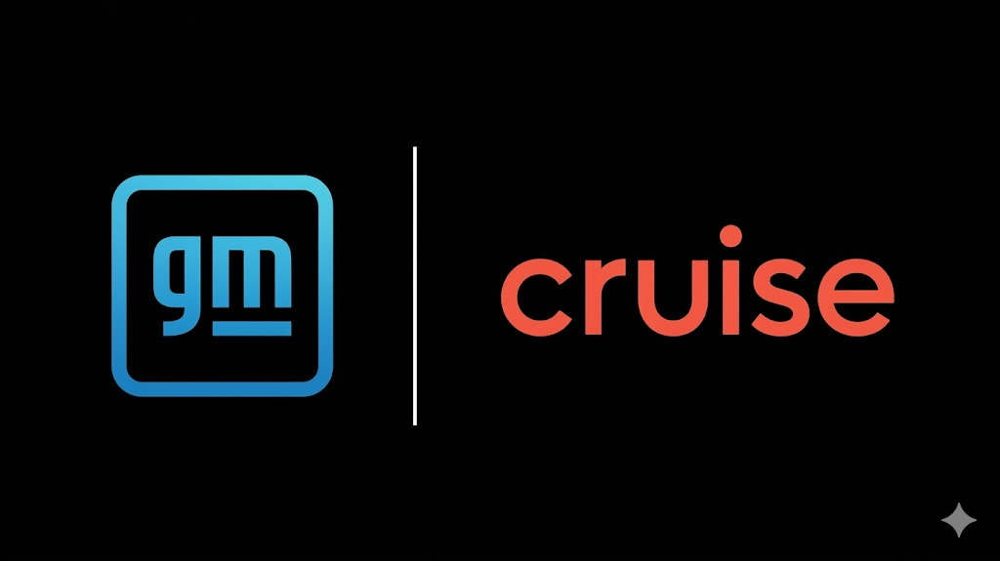
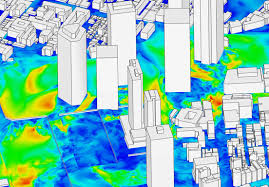
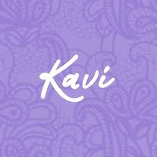
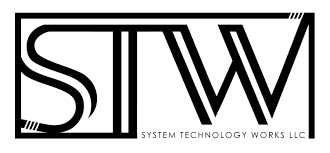

Built get schema(), a Python/C API on Cruise’s PubSubMultiReader library to enforce strict IDL field types over TLV schemas, eliminating silent, high-volume type inflation (e.g., boolean variables inflating to Int64, wasting 63 of 64 bits per field) and optimizing space by dropping serialized payload footprints by up to 68.3% across pipeline boundaries in practice.
Root-caused a concurrency bug in Cruise’s infrapy C library that had silently corrupted every frame from GOP-5 cameras for months, completely blocking the Embodied AI team’s object-detection pipeline from ingesting camera data; designed a context-aware routing fix restoring full data integrity across all downstream consumers.
Extended a C extension with a recursive IDL tree walker and NAL-unit-level keyframe detector over raw H.264 Annex-B bitstreams using Exp-Golomb decoding, enabling frame-accurate bitstream seeking at scale.
Designed spatiotemporal bit-packing and compression pipelines in C++ that reduced storage footprints by 98.5% (70+ GB to <1 GB), eliminating serialization bottlenecks for downstream routing.
Implemented Kalman filtering algorithms to smooth out high-variance state estimation signals, maintaining a 96.3% reconstruction fidelity despite radical data reduction.
Generated predictive Motif pipelines with graph-based models to identify human decision-making features with 84% accuracy

Ingested 500+ GB of noisy sequential sensor streams, isolating critical behavioral telemetry from environmental noise to reconstruct highly accurate 3D simulation inputs.
Utilized LiDAR derived features to implement SOLWEIG to simulate and predict perceived microclimate (RMSE < 1.5°C), enabling thermal-aware routing to mitigate Autonomous Vehicle hardware overheating.
Engineered and debugged alternative SOLWEIG pipeline to simulate and predict perceived temperature with a 93% faster runtime, no spatial compression, and 99.3% accuracy.

Developed an NLP-based recommendation system using transcript similarity analysis to automate personalizations.
Migrated local auth to AWS Cognito for enhanced security and cloud infrastructure scalability.
Built "Project Amplify" (C++/Raspberry Pi 4) to convert analog radio waves to digital internet streams.

Led deployment of LLMs on humanoid robot (Zeus2Q), optimizing on-device inference using Ollama.
Reduced inference latency through model selection, quantization, and system-level optimizations.
Founded and scaled an international hackathon, designing technical tracks for AI and systems programming.
Authored and delivered hands-on technical workshops, lowering entry barriers for first-time developers.